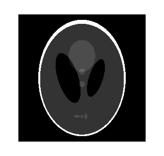
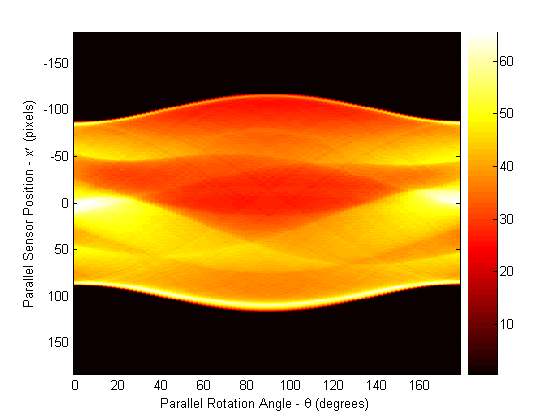
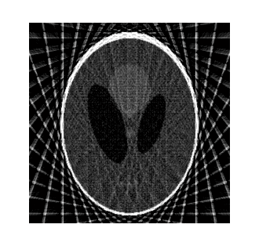
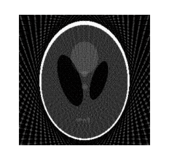
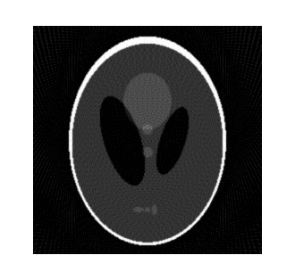
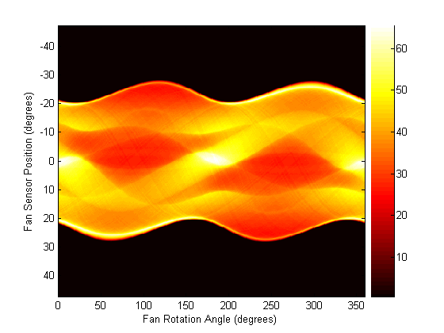
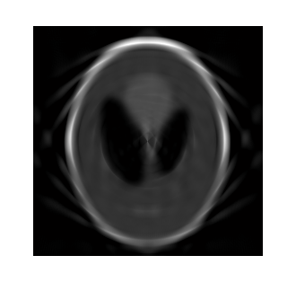
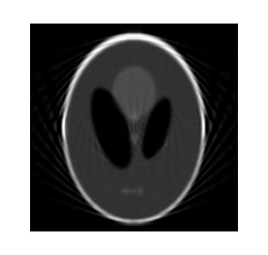
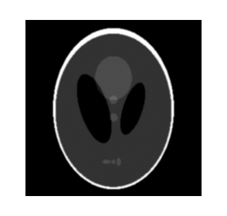

This demo shows how to use radon,iradon,fanbeam, and ifanbeam to form projections from a sample image and then reconstruct the image from the projections. While radon and iradon use a parallel-beam geometry for the projections, fanbeam and ifanbeam use a fan-beam geometry. To compare parallel-beam and fan-beam geometries, the examples below create synthetic projections for each geometry and then use those synthetic projections to reconstruct the original image.
A real-world application that requires image reconstruction is X-ray absorption tomography where projections are formed by measuring the attenuation of radiation that passes through a physical specimen at different angles. The original image can be thought of as a cross section through the specimen in which intensity values represent the density of the specimen. Projections are collected by special medical imaging devices and then an internal image of the specimen is reconstructed using iradon or ifanbeam.
The function iradon reconstructs an image from parallel-beam projections. In parallel-beam geometry, each projection is formed by combining a set of line integrals through an image at a specific angle. The function ifanbeam reconstructs an image from fan-beam projections, which have one emitter and multiple sensors.
See the Image Processing Toolbox User's Guide for diagrams that illustrate both geometries.
The test image is the Shepp-Logan head phantom which can be generated using the function phantom. The phantom image illustrates many qualities that are found in real-world tomographic imaging of human heads. The bright elliptical shell along the exterior is analogous to a skull and the many ellipses inside are analogous to brain features or tumors.
P = phantom(256); imshow(P)
Calculate synthetic projections using parallel-beam geometry and vary the number of projection angles. For each of these calls to radon, the output is a matrix in which each column is the Radon transform for one of the angles in the corresponding theta.
theta1 = 0:10:170; [R1,xp] = radon(P,theta1); num_angles_R1 = size(R1,2)
num_angles_R1 =
18
theta2 = 0:5:175; [R2,xp] = radon(P,theta2); num_angles_R2 = size(R2,2)
num_angles_R2 =
36
theta3 = 0:2:178; [R3,xp] = radon(P,theta3); num_angles_R3 = size(R3,2)
num_angles_R3 =
90
Note that for each angle, the projection is computed at N points along the xp-axis, where N is a constant that depends on the diagonal distance of the image such that every pixel will be projected for all possible projection angles.
N_R1 = size(R1,1) N_R2 = size(R2,1) N_R3 = size(R3,1)
N_R1 = 367 N_R2 = 367 N_R3 = 367
So, if you use a smaller head phantom, the projection needs to be computed at fewer points along the xp-axis.
P_128 = phantom(128); [R_128,xp_128] = radon(P_128,theta1); N_128 = size(R_128,1)
N_128 = 185
Display the projection data R3. Some of the features of the original phantom image are visible in the image of R3. The first column of R3 corresponds to a projection at 0 degrees, which is integrating in the vertical direction. The centermost column corresponds to a projection at 90 degrees, which is integrating in the horizontal directions. The projection at 90 degrees has a wider profile than the projection at 0 degrees due to the large vertical semi-axis of the outermost ellipse of the phantom.
figure, imagesc(theta3,xp,R3) colormap(hot) colorbar xlabel('Parallel Rotation Angle - \theta (degrees)'); ylabel('Parallel Sensor Position - x\prime (pixels)');
Match the parallel rotation-increment, dtheta, in each reconstruction with that used above to create the corresponding synthetic projections. In a real-world case, you would know the geometry of your transmitters and sensors, but not the source image, P.
The following three reconstructions (I1, I2, and I3) show the effect of varying the number of angles at which projections are made. For I1 and I2 some features that were visible in the original phantom are not clear. Specifically, look at the three ellipses at the bottom of each image. The result in I3 closely resembles the original image, P.
Notice the significant artifacts present in I1 and I2. To avoid these artifacts, use a larger number of angles.
% Constrain the output size of each reconstruction to be the same as the % size of the original image, |P|. output_size = max(size(P)); dtheta1 = theta1(2) - theta1(1); I1 = iradon(R1,dtheta1,output_size); figure, imshow(I1)
dtheta2 = theta2(2) - theta2(1); I2 = iradon(R2,dtheta2,output_size); figure, imshow(I2)
dtheta3 = theta3(2) - theta3(1); I3 = iradon(R3,dtheta3,output_size); figure, imshow(I3)
Calculate synthetic projections using fan-beam geometry and vary the 'FanSensorSpacing'.
D = 250; dsensor1 = 2; F1 = fanbeam(P,D,'FanSensorSpacing',dsensor1); dsensor2 = 1; F2 = fanbeam(P,D,'FanSensorSpacing',dsensor2); dsensor3 = 0.25; [F3, sensor_pos3, fan_rot_angles3] = fanbeam(P,D,... 'FanSensorSpacing',dsensor3);
Display the projection data F3. Notice that the fan rotation angles range from 0 to 360 degrees and the same patterns occur at an offset of 180 degrees because the same features are being sampled from both sides. You can correlate features in this image of fan-beam projections with the same features in the image of parallel-beam projections, above.
figure, imagesc(fan_rot_angles3, sensor_pos3, F3) colormap(hot) colorbar xlabel('Fan Rotation Angle (degrees)') ylabel('Fan Sensor Position (degrees)')
Match the fan-sensor-spacing in each reconstruction with that used to create each of the synthetic projections. In a real-world case, you would know the geometry of your transmitters and sensors, but not the source image, P.
Changing the value of the 'FanSensorSpacing' effectively changes the number of sensors used at each rotation angle. For each of these fan-beam reconstructions, the same rotation angles are used. This is in contrast to the parallel-beam reconstructions which each used different rotation angles.
Note that 'FanSensorSpacing' is only one parameter of several that you can control when using fanbeam and ifanbeam. You can also convert back and forth between parallel- and fan-beam projection data using the functions fan2para and para2fan.
Ifan1 = ifanbeam(F1,D,'FanSensorSpacing',dsensor1,'OutputSize',output_size); figure, imshow(Ifan1)
Ifan2 = ifanbeam(F2,D,'FanSensorSpacing',dsensor2,'OutputSize',output_size); figure, imshow(Ifan2)
Ifan3 = ifanbeam(F3,D,'FanSensorSpacing',dsensor3,'OutputSize',output_size); figure, imshow(Ifan3)